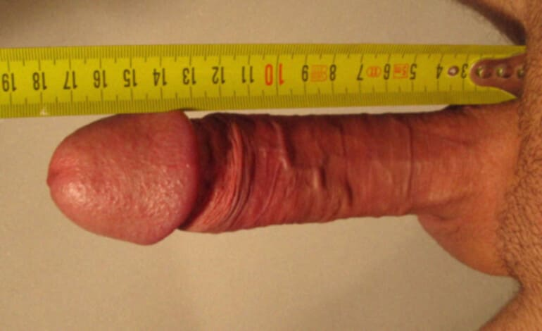

- Raúl Campos, 22 años,
- 7,258

No me importaba el tamaño de mi pene hasta que entré en la universidad. Cuando en mi primer año fui al baño compartido por primera vez, mis compañeros se rieron de mí. ''¡Tu pene es demasiado pequeño y vas a morir virgen!'', me dijeron.
Cuando llegué a casa, medí mi pene con una regla. Solo medía unos miserables 11 cm estando erecto, y cuando no estaba excitado, era de solo 5 cm. Casi un micropene, sí.
Me convertí en un marginado en la universidad
Después de ese incidente, me volví "famoso" en toda la facultad. Los chicos estuvieron riéndose de mí públicamente durante otros 2 años. Las chicas también se reían de mi "herramienta". En resumen, los primeros años fui un verdadero marginado. Si no fuera por mis padres quienes pagaban mis estudios, ¡habría dejado esa maldita universidad hace mucho tiempo!
Además, me gustaba mucho Pilar, mi compañera de clase. Quería tener una aventura con ella, pero ella escuchó los rumores de que tenía una salchicha pequeña. Cuando la invité a un café, se burló de mí. Me dijo algo así como: ''Venga, amigo, vete a casa, juega con tu pequeñín, ¡pero no trates de ligar conmigo nunca más!''
¡Pasé mucha vergüenza y lloré a cántaros!
¡Es incluso peor que estar discapacitado!
Me emborraché por el dolor que sentía y fui llorando a casa de Samuel, el único amigo que tenía. Le dije que lo mío no era masturbarme viendo porno por el resto de mi vida. Quería conocer a una chica normal después de graduarme de la universidad para formar una familia con ella. Al fin y al cabo, siempre es mejor con una mujer que con una mano.
Samuel escuchó con calma mis quejas y me dijo con confianza que él también había sufrido por eso, pero que luego aunó fuerzas y agrandó su pene, incluso antes de entrar en la universidad.
Me quedé alucinado: ¿cómo era posible?
No es un músculo que se pueda bombear ni un peinado que sea fácil de cambiar. ¿Se había operado o qué?
Resultó ser que Samuel usó un producto especial llamado que le ayudó a agrandar su pene 5 cm. La verdad es que este producto no se vende ni en las farmacias ni en las tiendas de sexo, solamente en la web del fabricante. Afortunadamente, Samuel me dio la página donde se podía comprar
Cuando llegué a casa, compré inmediatamente este producto. El paquete llegó rápidamente, en solo unos días. Me puse manos a la obra inmediatamente. ¡Es cierto que la polla crece gracias a él! Por la tarde, noté que había crecido un par de mm más en longitud y en grosos. ¿Os lo podéis creer?
Cada día, el bulto en mis pantalones era cada vez más grande. Una semana después, me desperté con una erección tan gigante que casi se me rompen los calzoncillos.
Medí mi pene con una regla y me quedé flipado. ¡18 cm! ¡Ni siquiera podía soñar con algo así!
(foto después / o antes-después)
Me fui acostumbrando al nuevo tamaño durante un mes. ¡Resultó ser que tener una gran polla y masturbarse es más agradable! Se pone dura más rápido y los orgasmos son realmente increíbles.
Los chicos de la universidad se calmaron notablemente y gradualmente dejaron de reírse de mí. Incluso comenzaron a mostrar respeto, darme la mano e invitarme a fiestas. Ya no me avergüenzo de ir al baño compartido.
Y Pilar... ¿Qué hay de Pilar? Sí, ahí está, a mi lado, leyendo lo que escribo. Llevamos un año juntos. Además, ella misma me invitó a salir, así que... ¡Todo es genial en la cama!
Las amigas de Pilar, que solían reírse y burlarse de mí, ahora tienen envidian de nosotros. Y hay dos chicas que me preguntan: ''¿Quieres tener sexo?'' Por supuesto, yo les digo que no. En primer lugar, ya tengo novia. En segundo lugar, fueron ellas las que más difundieron los rumores de que yo tenía un pene pequeño e incluso se lo contaron a Pilar. ¡Qué les den! (No literalmente).
Chicos, ¿queréis lo mismo?
Nunca hubiera escrito esta historia si no fuera por mi sincero deseo de ayudar a personas como yo. No os quedéis encerrados con vuestros complejos, ¡adelante !
¡Y no olvidéis agradecernos a Pilar y a mí!
¡Adiós!